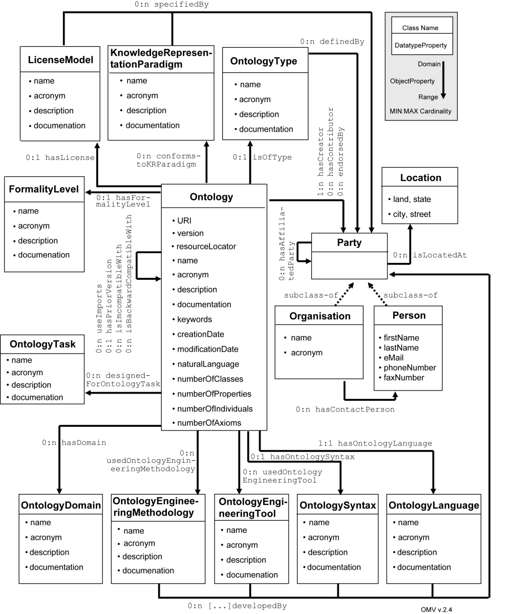

")
")
OMV - Ontology Metadata Vocabulary
El Ontology Metadata Vocabulary OMV es un estándar propuesto para describir ontologías y las entidades relacionadas. El esquema de metadatos de OMV está formalmente representado como una ontología y está diseñado de forma modular: OMV distingue entre el OMV Core y varias extensiones OMV. El núcleo, OMV Core, captura información que será relevante para la mayor parte de las configuraciones del proceso de reutilización de ontologías, mientras que las extensiones, OMV Extensions, permiten a los desarrolladores de ontologías y usuarios especificar tareas y aplicaciones específicas a la información relacionada con la ontología (por ejemplo, mappings, evaluación de la ontología, cambios de la ontología, etc.)

¿Cuándo habría que usarlo?
Las ontologías han sufrido un enorme desarrollo en muchos ámbitos en los últimos años, especialmente en el contexto de la Web Semántica. Actualmente, sin embargo, el intercambio de conocimientos eficiente y la reutilización, un pre-requisito para la realización de la visión de la Web Semántica, es una tarea difícil ya que es difícil encontrar y compartir ontologías debido a la falta de normas para documentar y anotar ontologías con información de metadatos. Sin los metadatos específicos a las ontologías específicas, los desarrolladores no son capaces de explotar las ontologías existentes, lo que conduce a problemas de interoperabilidad, así como la duplicación de esfuerzos. Así que, con el fin de proporcionar una base para un acceso efectivo y un intercambio de ontologías en la web, es necesario ponerse de acuerdo en un estándar para los metadatos de las ontologías que sea un con conjunto común de términos y definiciones que describan las ontologías, y que se denomine vocabulario de metadatos (Ontology Metadata Vocabulary OMV). Por lo tanto, OMV permite a los usuarios del mundo académico y la industria identificar, encontrar y aplicar - básicamente en términos de reutilización - ontologías y entidades relacionadas con eficacia y eficiencia.
¿Cómo usarlo?
Los desarrolladores de ontologías pueden fácilmente crear extensiones de OMV especificando tareas, aplicaciones e información relacionada con la ontología. Dichas extensiones deben ser compatibles con el esquema del núcleo de OMV pero al mismo tiempo deben cumplir con los requisitos de dominio, tareas o las configuraciones de la comunidad. Los elementos de OMV se clasifican en función de su impacto en los términos de reusabilidad del contenido descrito en la ontología (por ejemplo, required, optional) y de acuerdo con el tipo y el propósito de la información contenida (por ejemplo, la disponibilidad, la procedencia, aplicación, etc.) Algunos ejemplos del uso de los OMV se pueden encontrar en aplicaciones tales como la interfaz gráfica de Oyster de NeOn toolkit (http://neon-toolkit.org/wiki/Oyster-GUI) o Watson Semántica Gateway (http://watson.kmi.open.ac.uk/WatsonWUI).
¿Dónde se puede usar?
OMV se ha sido utilizado en la red temática europea de excelencia Knowledge Web y en el proyecto europeo NeOn. Ya se ha aplicado con éxito en varias aplicaciones de web semántica en ambos proyectos y es el esquema usado para anotar las ontologías en red de NeOn Toolkit. Particularmente, OMV proporciona la base para la interoperabilidad a nivel de la herramienta a través de una interfaz común para los registros de la ontología o repositorios (por ejemplo, Oyster, Centrasite) y aplicaciones relacionadas, como Watson. Además, otras entidades fuera de nuestros proyectos (por ejemplo, el proyecto Protègè) se están interesando en la adopción de OMV..
Publicaciones y Noticias
El consorcio OMV está trabajando hacia la normalización de OMV en estrecha colaboración con el Stanford Center for Biomedial Informatics Research (BMIR). Por lo tanto, el consorcio OMV está a cargo del desarrollo y las actividades de normalización. Algunas publicaciones de OMV son:
- Hartmann, J.; Bontas E.; Palma R.; Gómez-Pérez, A.: "DEMO - Design Environment for Metadata Ontologies." In: Proceedings of the 3rd European Semantic Web Conference, ESWC 2006. Volume 4011. June 2006. Budva, Montenegro. Springer Berlin. 427-441. Conferencia ranking A.
- Hartmann, J.; Palma, R.; Sure, Y.; Haase, P.; Suarez-Figueroa, M. "OMV- Ontology Metadata Vocabulary". In: Proceedings of the International Workshop on Ontology Patterns for the Semantic Web, located at the conference International Semantic Web Conference, ISWC2005. November, 2005. Galway, Ireland.
- Palma, R., Hartmann, J.; Haase, P. "O M V - Ontology Metadata Vocabulary for the Semantic Web". Technical Report Version 2.4. 2008.

Created under Creative Commons License - 2015 OEG.